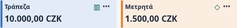
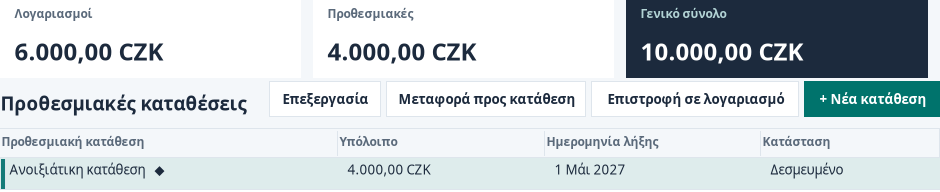
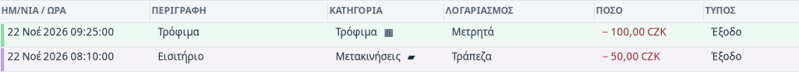
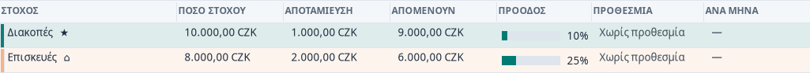

Πρώτη εκκίνηση και αναβάθμιση
Άνοιξε το σωστό budget
Πριν από την αναβάθμιση, άνοιξε την προηγούμενη έκδοση και πάτησε Ρυθμίσεις & αντίγραφα → Εξαγωγή αντιγράφου. Κράτησε το αρχείο JSON, κλείσε την εφαρμογή και αποσυμπίεσε ολόκληρο το νέο ZIP σε καινούργιο φάκελο. Μέσα στον φάκελο BudgetDesk άνοιξε το BudgetDesk.exe. Άφησε το αρχείο ρυθμίσεων δίπλα του. Το πραγματικό σου budget φορτώνει από την ίδια θέση στα Windows. Οι παλιές εγγραφές κρατούν την ημερομηνία τους. Όπου δεν υπήρχε ώρα, το πεδίο μένει κενό μέχρι να την προσθέσεις εσύ.
Οι έξι καρτέλες είναι Λογαριασμοί & πάγια, Προθεσμιακές, Ημερήσιες κινήσεις, Μηνιαία εικόνα, Ετήσια εικόνα και Στόχοι αποταμίευσης. Για δοκιμές άνοιξε το Support/Test-Sandbox.cmd. Δημιουργεί ξεχωριστό, αρχικά άδειο budget που διατηρείται και μετά το κλείσιμο. Το Support/Try-Demo.cmd ανοίγει τρίτο budget με έτοιμα παραδείγματα.
Ποιο αρχείο να ανοίξεις
| Αρχείο | Τι θα δεις |
|---|---|
| BudgetDesk.exe | Το κανονικό σου budget. Η αναβάθμιση σε νέο φάκελο προγράμματος ανοίγει τον ίδιο φάκελο δεδομένων. |
| Support/Test-Sandbox.cmd | Ξεχωριστό budget για εξάσκηση. Οι δοκιμαστικές κινήσεις αποθηκεύονται και τις ξαναβρίσκεις την επόμενη φορά. |
| Support/Try-Demo.cmd | Ξεχωριστό παράδειγμα με έτοιμα ποσά για να εξερευνήσεις τις έξι καρτέλες. |
Γλώσσα και εμφάνιση
Προσάρμοσε το περιβάλλον
Άνοιξε Settings & backup. Στο Language / Γλώσσα διάλεξε English, Ελληνικά ή Čeština. Στο Appearance / Εμφάνιση διάλεξε Φωτεινή ή Σκούρα και πάτησε Αποθήκευση. Η αλλαγή εφαρμόζεται αμέσως. Το συγκεκριμένο budget κρατά τις επιλογές και τις περιλαμβάνει στο αντίγραφο JSON.
Για επιστροφή στα αγγλικά, άνοιξε τις «Ρυθμίσεις & αντίγραφα» και διάλεξε English στο πρώτο πεδίο. Τα δικά σου ονόματα, οι περιγραφές και τα ποσά διατηρούνται. Η κάρτα μιας πάγιας πληρωμής σε παύση παραμένει κόκκινη και στις δύο εμφανίσεις.
Τι αλλάζει με την Αποθήκευση
| Ρύθμιση | Αποτέλεσμα |
|---|---|
| Γλώσσα | Αλλάζουν τα μενού, τα κουμπιά, οι ενδείξεις κατάστασης και τα ονόματα της παλέτας. Τα ονόματα και οι περιγραφές που πληκτρολόγησες κρατούν τη γραφή τους. |
| Φωτεινή ή Σκούρα | Η επιλογή εφαρμόζεται και στις έξι καρτέλες. Τα χρώματα των επιμέρους στοιχείων προσαρμόζονται στο φόντο. |
| Ξεχωριστά budget | Μπορείς να βάλεις διαφορετική εμφάνιση στο δοκιμαστικό budget για να αναγνωρίζεις αμέσως ποιο παράθυρο έχεις ανοίξει. |
Χρώμα για κάθε στοιχείο
Επιλογή κατά τη δημιουργία ή την επεξεργασία
Άνοιξε έναν νέο ή υπάρχοντα λογαριασμό, πάγιο, κίνηση, μελλοντικό έξοδο, στόχο ή πρότυπο. Στη γραμμή Χρώμα στοιχείου πάτησε το κουμπί που δείχνει το τρέχον χρώμα.
Διάλεξε ένα από τα 32 χρώματα. Πέρασε τον δείκτη πάνω από ένα δείγμα ή κινήσου με τα βελάκια για να δεις το όνομά του. Το σημάδι επιλογής δείχνει το τρέχον χρώμα. Η παλέτα κλείνει με την επιλογή. Πάτησε Αποθήκευση στη φόρμα του στοιχείου για να κρατήσεις την αλλαγή.
Πού εμφανίζεται το χρώμα που διάλεξες
| Στοιχείο | Τι συμβαίνει |
|---|---|
| Λογαριασμός ή πάγιο | Η κάρτα αποκτά ελαφριά απόχρωση και μια στενή λωρίδα στο ακριβές χρώμα. Στην παύση το πάγιο γίνεται κόκκινο. Με τη συνέχιση επιστρέφει το χρώμα σου. |
| Κίνηση ή προγραμματισμένο έξοδο | Χρωματίζεται η γραμμή του. Όταν το προγραμματισμένο έξοδο εξοφληθεί, η καταχώριση κρατά το χρώμα του. Η αλλαγή χρώματος ενός παγίου αφορά τις επόμενες πληρωμές. |
| Στόχος ή πρότυπο | Κάθε στόχος έχει το δικό του χρώμα στη λίστα. Το πρότυπο προτείνει το αποθηκευμένο χρώμα σε κάθε νέο πρόχειρο. Εκεί μπορείς να επιλέξεις άλλο. |
Τα 32 διαθέσιμα χρώματα
- Μπορντό
- Κόκκινο
- Κοραλλί
- Ροζ
- Ματζέντα
- Δαμασκηνί
- Βιολετί
- Λεβάντα
- Καφέ
- Κεραμιδί
- Πορτοκαλί
- Ροδακινί
- Κεχριμπαρί
- Κίτρινο
- Λαδί
- Λαχανί
- Κυπαρισσί
- Πράσινο
- Μέντα
- Πετρόλ
- Τιρκουάζ
- Κυανό
- Γαλάζιο
- Μπλε
- Σκούρο μπλε
- Λουλακί
- Μπεζ
- Λευκό
- Ασημί
- Γκρι
- Γκριζογάλαζο
- Μαύρο
Λογαριασμοί και κατηγορίες
Οργάνωσε τους λογαριασμούς σου
Στο Λογαριασμοί & πάγια → + Λογαριασμός βάλε όνομα, εικονίδιο, νόμισμα και αρχικό υπόλοιπο. Χρησιμοποίησε το υπόλοιπο στην αρχή της ημέρας που επέλεξες, πριν από τις συναλλαγές εκείνης της ημέρας. Το αρχικό ποσό μετράει στο υπόλοιπο του λογαριασμού. Στην αναφορά εσόδων μετρούν οι καταχωρισμένες εισπράξεις. Πάτησε μια κάρτα για διόρθωση. Σύρε τις κάρτες ή άλλαξε το Θέση εμφάνισης για να ορίσεις τη σειρά τους στην πρώτη καρτέλα.
Στο Ημερήσιες κινήσεις → Κατηγορίες μπορείς να προσθέσεις ή να μετονομάσεις κατηγορία και να βάλεις μηνιαίο όριο. Με ποσό μηδέν παρακολουθείς τα έξοδα χωρίς όριο. Χωρούν έως 20 λογαριασμοί, 20 κατηγορίες και 20 επαναλαμβανόμενα προγράμματα. Στις λίστες επιλογής λογαριασμών, κατηγοριών και εικονιδίων, τα ονόματα είναι αλφαβητικά και το σύμβολο ακολουθεί το όνομα. Πάτησε ένα γράμμα μέσα στη λίστα για να μεταφερθείς στο πρώτο όνομα που αρχίζει με αυτό.
Το πρώτο κλικ στην επικεφαλίδα μιας στήλης βάζει αύξουσα σειρά, το δεύτερο φθίνουσα και το τρίτο επαναφέρει την αρχική σειρά. Οι ημερομηνίες ταξινομούνται χρονολογικά και τα ποσά αριθμητικά. Η ταξινόμηση καλύπτει όλες τις σελίδες. Με Προηγούμενη / Επόμενη αλλάζεις σελίδα.

Πώς επηρεάζει το αρχικό υπόλοιπο τις αναφορές
| Παράδειγμα | Τι θα δεις |
|---|---|
| 10.000 CZK στην αρχή της ημέρας | Ο λογαριασμός ξεκινά με 10.000 CZK. Τα καταχωρισμένα έσοδα της ημέρας είναι μηδέν. |
| Αγορά 300 CZK σήμερα | Το υπόλοιπο γίνεται 9.700 CZK και η κατηγορία εμφανίζει δαπάνη 300 CZK. |
| Μισθός 2.000 CZK σήμερα | Το υπόλοιπο γίνεται 11.700 CZK. Η αναφορά εσόδων δείχνει 2.000 CZK. |
Προθεσμιακές καταθέσεις
Άνοιγμα και χρηματοδότηση
Στις Προθεσμιακές → + Νέα κατάθεση γράψε όνομα, ημερομηνία έναρξης και ημερομηνία λήξης. Διάλεξε τον λογαριασμό από τον οποίο φεύγουν τα χρήματα και βάλε το ποσό της κατάθεσης. Αν η προθεσμιακή υπάρχει ήδη και τα χρήματα είναι χωριστά από τα υπόλοιπά σου, διάλεξε Υπόλοιπο υπάρχουσας κατάθεσης.
Με Μεταφορά προς κατάθεση προσθέτεις χρήματα. Με Επιστροφή σε λογαριασμό επιστρέφεις μέρος ή όλο το ποσό. Σε διαφορετικά νομίσματα έλεγξε πόσα έφυγαν και πόσα πιστώθηκαν. Κάθε μεταφορά εμφανίζεται μία φορά στο ιστορικό.

Παράδειγμα με 10.000 CZK στην τράπεζα
| Κίνηση | Τράπεζα · προθεσμιακή · σύνολο |
|---|---|
| Μεταφέρεις 4.000 CZK στην προθεσμιακή | 6.000 · 4.000 · 10.000 CZK |
| Επιστρέφεις 1.500 CZK στην τράπεζα | 7.500 · 2.500 · 10.000 CZK |
| Επιστρέφεις τις υπόλοιπες 2.500 CZK | 10.000 · 0 · 10.000 CZK |
Καθημερινές κινήσεις
Από την απόδειξη στο ιστορικό
Στο Ημερήσιες κινήσεις → + Έξοδο διάλεξε τοπική ημερομηνία και ώρα, κατάστημα ή περιγραφή, λογαριασμό, ποσό και κατηγορία. Πάτησε Αποθήκευση. Με + Έσοδο πιστώνεις τον λογαριασμό. Στο Μεταφορά διάλεξε λογαριασμό προέλευσης και προορισμού. Αν έχουν διαφορετικά νομίσματα, συμπλήρωσε και το ποσό που πράγματι έφτασε στο νόμισμα προορισμού. Η μεταφορά κινεί χρήματα μεταξύ λογαριασμών και εξαιρείται από τα σύνολα εσόδων και εξόδων.
Αν μια απόδειξη έχει δύο κατηγορίες, βάλε πρώτα ολόκληρο το ποσό. Άνοιξε το Επιμερισμός αγοράς, μοίρασέ το και πάτησε Χρήση επιμερισμού. Τα επιμέρους ποσά πρέπει να αθροίζονται στο σύνολο της απόδειξης στο αρχικό της νόμισμα. Ο λογαριασμός χρεώνεται μία φορά. Το Επεξεργασία διορθώνει την ίδια εγγραφή. Με Διαγραφή τη διαγράφεις και τα υπόλοιπα υπολογίζονται ξανά.

Μία αγορά σε δύο κατηγορίες
| Βήμα | Τι να ελέγξεις |
|---|---|
| Ξεκίνα με 1.500 CZK στα Μετρητά | Πρόσθεσε έξοδο για ολόκληρη την απόδειξη, 1.000 CZK. Διάλεξε Μετρητά ως λογαριασμό. |
| Μοίρασε 600 και 400 CZK | Στον επιμερισμό επίλεξε δύο κατηγορίες. Το άθροισμα πρέπει να είναι 1.000 CZK πριν από την αποθήκευση. |
| Άνοιξε τις Καταχωρίσεις | Τα Μετρητά έχουν 500 CZK και υπάρχει μία κίνηση εξόδου. Στη μηνιαία εικόνα οι κατηγορίες δείχνουν 600 και 400. |
Αγορά σε διαφορετικό νόμισμα
Διάβασε την απόδειξη και τη χρέωση
Στο + Έξοδο διάλεξε τον λογαριασμό σου σε CZK. Δίπλα στο Ποσό / νόμισμα θα δεις αρχικά CZK. Για απόδειξη 20 ευρώ, γράψε 20 και άλλαξε το νόμισμα δίπλα στο ποσό σε EUR. Αν η τράπεζα σε χρέωσε 25 κορώνες για κάθε ευρώ, γράψε 25 στο Μετατροπή. Η προεπισκόπηση δείχνει 500 CZK. Με ένα Αποθήκευση, υπόλοιπο 10.000 CZK γίνεται 9.500 CZK και η απόδειξη παραμένει καταχωρισμένη ως 20 EUR.
Η ισοτιμία διαβάζεται ως μονάδες του νομίσματος λογαριασμού ανά μία μονάδα του νομίσματος αγοράς. Μπορείς να αλλάξεις την προτεινόμενη ισοτιμία ώστε να συμφωνεί με την κίνηση της τράπεζας. Αν λείπει ισοτιμία, συμπλήρωσέ τη πριν την αποθήκευση. Στο Ρυθμίσεις & αντίγραφα ορίζεις πόσες CZK αξίζει μία μονάδα EUR, USD, GBP, CHF ή PLN. Το νόμισμα αναφορών καθορίζει πώς εμφανίζονται τα σύνολα. Τα υπόλοιπα αποτιμώνται με την τρέχουσα ισοτιμία. Η καταχωρισμένη χρέωση και η αξία της σε CZK διατηρούνται μετά από αλλαγή ισοτιμιών. Μπορείς επίσης να επιλέγεις νόμισμα για έσοδα, προγραμματισμένα έξοδα και επαναλαμβανόμενες πληρωμές.
Η αξία του λογαριασμού και η αξία της παλιάς αγοράς
| Χρονική στιγμή | Τι υπολογίζει το Budget Desk |
|---|---|
| Λογαριασμός 100 EUR με ισοτιμία 25 CZK/EUR | Προσθέτει 2.500 CZK στο σύνολο των λογαριασμών. |
| Έξοδο 10 EUR με την ίδια ισοτιμία | Απομένουν 90 EUR. Η συγκεκριμένη αγορά προσθέτει 250 CZK στα έξοδα της αναφοράς. |
| Νέα ισοτιμία 26 CZK/EUR | Τα 90 EUR αποτιμώνται τώρα σε 2.340 CZK. Η παλιά αγορά παραμένει καταχωρισμένη στα 250 CZK. |
Εφάπαξ προγραμματισμένο έξοδο
Όρισε την ώρα της πληρωμής
Πήγαινε στις Ημερήσιες κινήσεις → + Μελλοντικό έξοδο. Όρισε ποσό, νόμισμα, λογαριασμό, κατηγορία και τοπική ημερομηνία και ώρα. Η επιλογή Αυτόματα στην ώρα λήξης είναι ενεργή στα νέα σχέδια. Η πληρωμή εμφανίζεται στα Μελλοντικά / σχέδια με ένδειξη «Αυτόματα» ή «Χειροκίνητα».
Αν ο υπολογιστής ήταν σε αναστολή ή το budget ήταν κλειστό, η εφαρμογή καταχωρίζει την πληρωμή όταν επιστρέψεις. Πρόκειται για εγγραφή στο προσωπικό budget. Τυχόν πραγματική τραπεζική πληρωμή γίνεται χωριστά.
Για απλή υπενθύμιση απενεργοποίησε την αυτόματη καταχώριση. Τα σχέδια που δημιουργήθηκαν πριν από την 1.2 διατηρούνται χειροκίνητα μέχρι να αλλάξεις τη ρύθμισή τους. Για να αυτοματοποιήσεις ένα παλιό σχέδιο, άνοιξέ το, όρισε την ώρα, ενεργοποίησε το «Αυτόματα στην ώρα λήξης» και αποθήκευσε. Αν η ώρα έχει περάσει, καταχωρίζεται αμέσως.
Στα χειροκίνητα σχέδια, η ένδειξη «Λήγει σήμερα» γίνεται «Εκπρόθεσμο σήμερα» μετά την ώρα λήξης. Μια υπενθύμιση χωρίς ώρα ισχύει όλη την ημέρα. Μετά την πληρωμή πάτησε Εξόφληση. Η επιβεβαίωση κρατά την τρέχουσα ώρα ή την ώρα που ορίζεις εσύ. Το CSV σχεδίων περιλαμβάνει όλα τα εκκρεμή σχέδια και την κατάστασή τους.
Στις 21:14 όρισε έξοδο 900 CZK για τις 21:15
| Πότε | Τι θα δεις |
|---|---|
| Στις 21:14 | Το έξοδο των 900 CZK εμφανίζεται στα προγραμματισμένα. Το διαθέσιμο υπόλοιπο και τα πραγματικά έξοδα του μήνα είναι ακόμη τα ίδια. |
| Στις 21:15 με αυτόματη καταχώριση | Το σχέδιο φεύγει από τη λίστα. Εμφανίζεται μία κίνηση 900 CZK και το υπόλοιπο μειώνεται μία φορά. |
| Στις 21:16 αν ανοίξεις τότε το budget | Η αυτόματη κίνηση περνά με ώρα 21:15. Άλλο ένα άνοιγμα κρατά ακριβώς την ίδια εγγραφή. |
Πάγιες πληρωμές
Όρισε την επόμενη ανεξόφλητη πληρωμή
Στο Λογαριασμοί & πάγια → + Πάγια πληρωμή, βάλε λογαριασμό, κατηγορία, ποσό, την επόμενη ανεξόφλητη ημερομηνία και ώρα, και το διάστημα επανάληψης. Για τριμηνιαία πληρωμή επίλεξε 3 Μήνες. Αν μια μηνιαία πληρωμή ξεκινά στις 31, εκτελείται την τελευταία ημέρα των μικρότερων μηνών και επιστρέφει στις 31 όταν γίνεται.
Το Κατάσταση ορίζει αν το πρόγραμμα είναι ενεργό. Ένα ενεργό Χειροκίνητα περιμένει να πατήσεις Καταχώριση. Με την επιβεβαίωση δημιουργείται μία χρέωση στην πραγματική ώρα πληρωμής και ορίζεται η επόμενη ημερομηνία. Με ενεργό το Αυτόματη καταχώριση, η κάρτα γράφει Αυτόματα. Η εφαρμογή ελέγχει τις εκκρεμείς πληρωμές στο άνοιγμα και προγραμματίζει τον επόμενο έλεγχο για την ώρα της επόμενης πληρωμής. Αν ήταν κλειστή, περνά τις πληρωμές που εκκρεμούν με τις προγραμματισμένες ώρες τους. Δεύτερη εκκίνηση δεν τις διπλασιάζει.
Με Παύση / συνέχεια παγώνεις ή επανενεργοποιείς το πρόγραμμα. Με την παύση, όλη η κάρτα γίνεται κόκκινη, με λευκά γράμματα και την ένδειξη Σε παύση στην αρχή. Παραμένει κόκκινη όταν διαλέξεις άλλη πληρωμή και όταν ξανανοίξεις το budget. Με το Resume επανέρχονται τα κανονικά χρώματα. Αν επανενεργοποιήσεις αυτόματο πρόγραμμα με ληξιπρόθεσμες πληρωμές, ζητά επιβεβαίωση πριν τις καταχωρίσει. Αν θέλεις να παραλείψεις συγκεκριμένες δόσεις, διόρθωσε πρώτα την επόμενη ανεξόφλητη ημερομηνία. Αλλαγή ποσού επηρεάζει τις επόμενες δόσεις. Άφησε το ποντίκι πάνω στην κάρτα για πλήρη στοιχεία, ώρα και κατάσταση.
Τι σημαίνει η κατάσταση της κάρτας
| Κατάσταση | Πότε προχωρά η επόμενη ημερομηνία |
|---|---|
| Αυτόματο | Το ενεργό πάγιο καταχωρίζει κάθε πληρωμή όταν λήξει. Όσες έληξαν όσο η εφαρμογή ήταν κλειστή περνούν όταν επιστρέψεις. |
| Χειροκίνητο | Αφού πληρώσεις, πάτησε Καταχώριση. Με την επιβεβαίωση δημιουργείται ένα έξοδο και το πρόγραμμα προχωρά μία περίοδο. |
| Σε παύση | Η κάρτα είναι κόκκινη και η αυτόματη καταχώριση αναστέλλεται. Πριν πατήσεις συνέχιση, έλεγξε την επόμενη ανεξόφλητη ημερομηνία. |
Πρότυπα και καταστήματα
Ετοίμασε όσα επαναλαμβάνονται
Στο Ημερήσιες κινήσεις → Πρότυπα → + Νέο δώσε όνομα στο πρότυπο, διάλεξε έξοδο ή έσοδο και βάλε όσα στοιχεία επαναχρησιμοποιείς. Με το Απομνημόνευση ποσού κλειστό, βάζεις τιμή κάθε φορά. Ένα split template κρατά σταθερό σύνολο και το μοίρασμα στις κατηγορίες. Αν το πρότυπο είναι σε ξένο νόμισμα, θυμάται το νόμισμα της απόδειξης. Έλεγξε την προτεινόμενη ισοτιμία όταν το χρησιμοποιήσεις.
Με Χρήση προτύπου ανοίγει νέο πρόχειρο με τρέχουσα ημερομηνία και ώρα. Με Αποθήκευση δημιουργείς μία συναλλαγή και με Ακύρωση κλείνεις το πρόχειρο. Το Αποθήκευση ως πρότυπο μέσα σε πρόχειρο αποθηκεύει ξεχωριστά το πρότυπο, οπότε μπορείς στη συνέχεια να ακυρώσεις τη συναλλαγή και να κρατήσεις το πρότυπο.
Στο Δικαιούχος / κατάστημα γράψε ένα νέο κατάστημα και αποθήκευσε την αγορά. Στην επόμενη κενή εγγραφή, η επιλογή του καταστήματος προτείνει τον λογαριασμό και την κατηγορία που θυμάται. Όσα επέλεξες εσύ ή έφερε ένα πρότυπο έχουν προτεραιότητα. Στο Δικαιούχοι αλλάζεις προεπιλογές, μετονομάζεις ή διαγράφεις το προφίλ. Οι παλιές αγορές κρατούν το όνομα με το οποίο καταχωρίστηκαν.
Ποια επιλογή ταιριάζει σε κάθε αγορά
| Περίπτωση | Τι να ρυθμίσεις |
|---|---|
| Ίδιο κατάστημα, διαφορετικό ποσό | Φτιάξε πρότυπο με την απομνημόνευση ποσού κλειστή. Κάθε φορά γράφεις το ποσό της νέας απόδειξης. |
| Ίδια αγορά σε δύο κατηγορίες | Αποθήκευσε σταθερό σύνολο και επιμερισμό στο πρότυπο. Πριν αποθηκεύσεις την κίνηση, έλεγξε ποσά, λογαριασμό και χρώμα. |
| Συνήθως ίδιο κατάστημα | Σε κενή κίνηση επίλεξε γνωστό κατάστημα. Η εφαρμογή προτείνει λογαριασμό και κατηγορία και μπορείς να αλλάξεις και τα δύο. |
Αναφορές και αναζήτηση
Βρες από ποιες εγγραφές προκύπτει ένα σύνολο
Το Μηνιαία εικόνα δείχνει πραγματικά έσοδα, έξοδα, καθαρό αποτέλεσμα και δαπάνες ανά κατηγορία σε σχέση με το μηνιαίο όριό της. Το καθαρό αποτέλεσμα είναι έσοδα μείον έξοδα. Το Ετήσια εικόνα εμφανίζει δώδεκα μήνες. Με διπλό κλικ σε έναν μήνα ανοίγεις τις λεπτομέρειές του. Τα CSV μήνα και έτους περιλαμβάνουν όλες τις καταχωρισμένες συναλλαγές της περιόδου, μαζί με τις μεταφορές ως ξεχωριστό τύπο. Τα ανεξόφλητα σχέδια έχουν δική τους εξαγωγή.
Στο Ημερήσιες κινήσεις → Όλο το ιστορικό, συνδύασε κείμενο, λογαριασμό, κατηγορία, τύπο, ημερομηνίες από/έως και συνολικό ποσό. Περιλαμβάνονται και οι δύο ακραίες ημερομηνίες. Το φίλτρο ποσού χρησιμοποιεί ολόκληρο το ποσό της απόδειξης στο αρχικό της νόμισμα. Με φίλτρο κατηγορίας προσμετράται μόνο το τμήμα ενός split που ανήκει σε αυτήν. Το Καθαρισμός επαναφέρει όλο το ιστορικό. Μπορείς να διορθώσεις το επιλεγμένο αποτέλεσμα ή με CSV αποτελεσμάτων να εξαγάγεις όλα τα αποτελέσματα από όλες τις σελίδες. Το CSV ξεχωρίζει ποσό αγοράς, ποσό λογαριασμού, νομίσματα, ισοτιμία και τις αντίστοιχες ώρες.
Τι μετρά στα έσοδα και στα έξοδα
| Καταχώριση | Επίδραση στην αναφορά |
|---|---|
| Μισθός 2.000 CZK και επιμερισμένη αγορά 1.000 CZK | Έσοδα 2.000, έξοδα 1.000, καθαρό +1.000 CZK. Τα μερίδια των κατηγοριών αποτελούν μαζί το ένα έξοδο. |
| Μεταφορά 500 CZK από Τράπεζα σε Μετρητά | Αλλάζουν τα δύο υπόλοιπα. Τα έσοδα, τα έξοδα και το καθαρό σύνολο παραμένουν ίδια. |
| Εκκρεμές μελλοντικό έξοδο | Εμφανίζεται στα σχέδια και στο CSV σχεδίων. Στα πραγματικά έξοδα περνά με την καταχώρισή του. |
Στόχοι αποταμίευσης
Όρισε στόχο και παρακολούθησε την πρόοδο
Στο Στόχοι αποταμίευσης → + Νέος στόχος όρισε στόχο, νόμισμα, όσα έχεις ήδη βάλει στην άκρη και, προαιρετικά, προθεσμία. Το Προσθήκη ποσού ενημερώνει την πρόοδο. Σε στόχο 10.000 CZK, με 1.000 CZK αποταμίευση βλέπεις 10% και απομένουν 9.000 CZK. Αν πραγματικά μετακίνησες χρήματα μεταξύ λογαριασμών, πέρασε την κίνηση ξεχωριστά με Μεταφορά.

Παράδειγμα με στόχο 10.000 CZK
| Ενέργεια | Πρόοδος και ποσό που απομένει |
|---|---|
| Δημιούργησε στόχο με μηδέν αποταμίευση | Δείχνει 0% και απομένουν 10.000 CZK. Διάλεξε χρώμα για να βρίσκεις τη γραμμή του. |
| Πρόσθεσε αποταμίευση 1.000 CZK | Δείχνει 10% και απομένουν 9.000 CZK. Τα τραπεζικά υπόλοιπα παραμένουν ίδια. |
| Στην επεξεργασία άλλαξε τα αποταμιευμένα σε 2.500 CZK | Δείχνει 25% και απομένουν 7.500 CZK. Από αυτό το πεδίο μπορείς επίσης να διορθώσεις λάθος ή να μειώσεις το δεσμευμένο ποσό. |
Αντίγραφα και επαναφορά
Φύλαξε ή ανάκτησε το budget σου
Οι αλλαγές αποθηκεύονται στον υπολογιστή σου. Με Ρυθμίσεις & αντίγραφα → Φάκελος δεδομένων ανοίγεις τον φάκελο του budget που χρησιμοποιείς. Το πραγματικό budget βρίσκεται κανονικά στο %LOCALAPPDATA%\BudgetDesk\Data. Ο υποφάκελος Backups κρατά έως 20 προηγούμενες αποθηκεύσεις. Το Εξαγωγή αντιγράφου δημιουργεί πλήρες JSON με λογαριασμούς, κινήσεις, προγράμματα, στόχους, πρότυπα και καταστήματα. Το CSV χρησιμεύει για ανάγνωση ή ανάλυση.
Το Επαναφορά ελέγχει το JSON και ζητά επιβεβαίωση πριν αντικαταστήσει το ανοιχτό budget. Οι νεότερες κινήσεις μετά το αντίγραφο αναιρούνται. Δοκίμασε τη διαδικασία στο δοκιμαστικό παράθυρο. Μόνο ένα παράθυρο μπορεί να έχει ανοιχτό το ίδιο budget κάθε φορά. Αν η εφαρμογή δεν ανοίγει, κλείσε τυχόν δεύτερο αντίγραφο και τρέξε το Support/Start-BudgetDesk.cmd για διαγνωστικά. Αν δεν διαβάζεται το αρχείο δεδομένων, μπορείς από το παράθυρο ανάκτησης να επιλέξεις παλιότερο JSON.
Ποιο αρχείο χρειάζεσαι
| Θέλεις να… | Τι να χρησιμοποιήσεις |
|---|---|
| Επαναφέρεις ολόκληρο το budget | Εξαγωγή JSON. Περιλαμβάνει χρώματα, γλώσσα, θέμα, λογαριασμούς, κινήσεις, σχέδια, στόχους, πρότυπα και καταστήματα. |
| Αναλύσεις κινήσεις σε υπολογιστικό φύλλο | CSV μήνα, έτους, ιστορικού ή σχεδίων. Διάλεξε την προβολή που περιέχει τις κινήσεις που χρειάζεσαι. |
| Βρεις παλαιότερη τοπική αποθήκευση | Άνοιξε τον φάκελο δεδομένων του ενεργού budget και έλεγξε τον υποφάκελο Backups. Έλεγξε την ημερομηνία και σε ποιο budget ανήκει το αντίγραφο. |